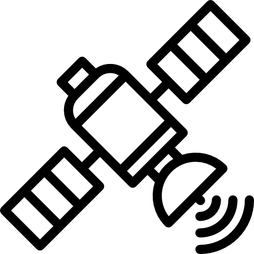

The ISTQB (International Software Testing Qualifications Board) defines a generic test automation setup by dividing it into layers.
- Definition Layer which defines the test cases and test data.
In the case of Robot Framework, this is the test case files and resource files, as well as any data files used in testing. - Execution Layer which executes the tests and collects results. This means Robot Framework itself. Individual .robot files are part of the definition layer, and Robot Framework as an executable tool and runnable program is part of the execution layer.
- Adaptation Layer which adapts the test automation framework to different environments and technologies. This consists tools used to connect to and control the system under test. This is usually provided by a lower level programming language such as python, and in case SUT being hardware, any hardware-specific drivers or libraries.
- System Under Test (SUT) which is the application or system being tested. This includes both the hardware and firmware of the device that is being tested, or in case of software being under test, any part of the software system that is required to run it.


